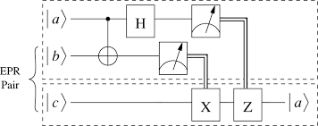

Thursday last I gave a really fast primer on quantum mechanics (with an eye towards
quantum computing) for the university's computer science club. Computer science majors
are a technically inclined audience, but (at least at Waterloo) have no mandatory training
in fundamental physics. This perspective lays an interesting challenge! How do you motivate
a field for an audience with a wholly different set of interests? I tried starting with the
mathematics as a common foundation, thinking that this would lead to a more accessible entry-
what I found instead was that letting the students ask questions about the physics, they
managed to get the principles more clearly!
I'm gonna write out the essence of the talk here. It's pretty entry-level stuff, I think you
could find most of what I laid out in the first two chapters of Nielsen and Chuang. I focused on
two physical properties of quantum states and their interactions- superposition and entanglement.
Both of these properties yield interesting results when you apply them to problems that are
computational in nature!
First up is to talk superposition: Superposition is a fundamental principle of quantum
mechanics. That is to say, it is an observed phenomena that two quantum states can be
"overlaid" in a way to create a new state, in a way quite analogous to the way macroscopic waves
overlay- the associated constructive and destructive interference included. In fact, the mathematical
representations of dynamics of quantum systems are wavelike in nature, reflecting this. We call the
principle of superposition one of the "postulates" of quantum mechanics.
In a mathematical way, we need to talk about the way that a quantum state "exists" mathematically speaking.
We express quantum mechanical systems and states as elements (generally vectors) of a multi-dimensional
(even infinitely dimensional), complex-valued
"Hilbert Space".
We take that the basis of this Hilbert space is orthonormal for a few reasons- firstly, in quantum mechanics,
we cannot distinguish between the measurement outcomes of non-orthogonal systems reliably. Picking an orthogonal
basis in which to operate makes the construction of reliably measurable states simpler. It also has the added benefit
of making many of our calculations very simple- if you're taking the inner product between any two non-equal elements,
it's just zero! As for normality, we use normalized vectors so that we can keep our notions and parallels with
probabilistic results, and normality conditions lead to natural weightings on expected measurement results.
Concretely, taking some state $$\ket{\psi} = \alpha\ket{0}+\beta\ket{1}$$ $$\alpha^2+\beta^2 = 1$$
and realizing that in our "computational basis" our vectors are represented as $$\ket{0} =
\begin{pmatrix}
1 \\
0\\
\end{pmatrix}, \,
\ket{1} =
\begin{pmatrix}
0 \\
1 \\
\end{pmatrix}$$
we see that the state $\ket{\psi}$ is in fact normal upon the evaluation of the inner product. We say that
$\ket{\psi}$ is in a "superposition" of $\ket{0}$ and $\ket{1}$, as it's a linear combination of the two basis
parameters. This is in clear analog of classical superpositions of waves, their waiting, and their position in space.
A lot of the advantage that we're availed in quantum computing comes from the idea that the parameters
$\alpha$ and $\beta$ are allowed to take any complex values, so long as they fulfill the above condition. The way That
a collapse of a superposition happens is with a "measurement"- which essentially selects either of the states with a
probability of the squares of their respective coefficients. This is reflected in
Born's Rule and expressed mathematically
with the explanation that quantum state vectors may be represented as belonging to the space $L^2(\mathbb{R})$
with a Lebesgue measure of 1. The probability amplitudes of each potential result may be found to be
$$c_n^2$$
with
$$c_n = \braket{\psi_n}{\phi_n} = \int_{-\infty}^{\infty}\psi^{*}_{n}\phi_{n}dx.$$
Again, making sure that the normality condition is held. Effectively, we should be finding results
saying the probability of measuring a certain outcome is the square of the coefficient associated with that
state- though this may change after particular operations on our state vector.
Next stop on our road to understanding in entanglement. Entanglement is a feature of quantum mechanics that has
a reputation for being fairly unintuitive- not the least reason for this being that associated terms lend to the
notion that entangled particles allow superluminal communication- which is a very big problem if you're a
German named Albert. At it's core, entanglement is an induced relationship between certain observable parameters of
quantum systems- spin and polarization requiring special mention as the "canonical" examples. What plagued the physics
community in the late 1930's was the indication that entangled states violated a principle called "local realism" which
was a long-standing notion of classical mechanics. This violation is what Einstein, as well as his collaborators
Podolsky and Rosen, had the most trouble accepting. However, it was shown experimentally that entangled states do in fact
violate local realism, more or less putting the argument to rest. The result of decoherence is known immediately by the
states in question, though the knowledge of the result is not. There is no violation of special relativity, despite what
the terminology would lead the naive to think.
In mathematical terms, lets say we have two state vectors from two different Hilbert spaces, $\mathcal{H}_a$ and
$\mathcal{H}_b$. Then the interaction of these two states is going to exist in the "product space"
$$\mathcal{H}_a \otimes \mathcal{H}_b.$$ Now, some vectors may exist in this product space that may be written out
simply as kronecker products between vectors from each state themselves, say
$$\ket{\phi_a}\otimes\ket{\psi_b}.$$ We call states like these "separable", and they are not entangled.
However, there are plenty of new state vectors that do exist in the product space and are not separable. For
example, the state $$\frac{\ket{0}_a\ket{0}_b+\ket{1}_a\ket{1}_b}{\sqrt{2}}$$ is not separable, but surely exists in some product state.
We call these states entangled because it is impossible to say which part of the state came from what Hilbert space.
These entangled may be measured partially such that you learn both results without having to measure both states
individually- in the above example, if Alice measures her state to be 0, we know Bob's state is also 0.
Entanglement doesn't last forever, though- once the entangled states are measured, they decohere and are no longer
correlated.
So what does any of this physics stuff have to do with computing? It turns out that there are some algorithms that, if
implemented on the appropriate hardware, produce a significant speed-up over classical methods of computing when using
these properties!
Personally, I find that "quantum teleportation" is an algorithm that is sufficiently simple to explain to the interested
layperson, but with a result interesting enough and understandable enough to be appreciated. Let's dive in!
First, it is important to make explicit our vernacular. A "qubit" is most easily understood in the same way a classical bit is,
but with the ability to conform to the conventions of quantum mechanics. Most intuitively, a single qubit is a two-level system
which may exist in superposition but must collapse into one of its mutually-exclusive states: $\ket{0}$ or $\ket{1}$. There are
many different models for the physical realization of a qubit, and to list and explain them would be a post all to itself (and
frankly a little outside my particular area of interest at the moment). You can put a bunch of qubits together, and you can entangle
them with each other.
Now lets set the scene. Let us suppose that Alice and Bob are an adventuring duo who share a mutual interest in information
theory. Sometime before the events of today's adventure, they decided to, as good enthusiasts, prepare a bell state and
share it. For simplicity, say they chose the state $$\ket{\beta_{00}}=\frac{\ket{0}_a\ket{0}_b+\ket{1}_a\ket{1}_b}{\sqrt{2}}.$$
Now say, in the course of their adventuring, that they get separated. For reasons of emotional engagement and authorial laziness,
it is absolutely necessary that Alice be able to get a particular quantum state, $\ket{a}=\alpha\ket{0}+\beta\ket{1}$, to Bob
lest they suffer an absurd level of dismay at the hands of some nefarious entity. The only tool they have to save the day is their
knowledge of quantum mechanics and a few bits of classical information (like a phone call or something).
Now, the odds look pretty bad. They can't physically meet, and they can only share classical bits. But due to the nature of superposition,
there's literally an infinite amount of information that would need to be shared between the two to fully characterie the quantum state (say
if alpha/beta are transcendental numbers). Not only that, but they only have a single qubit to share! Can they do it?
You better believe it. Here's the scheme -

In this diagram, $\ket{b}$ and $\ket{c}$ are the entangled qubits making up the bell state, the former belonging to Alice
and the latter to Bob. Word to the wise: circuit diagrams are read from left to right and top-down, but the operations
performed by the gates are still applied on the left of the input bits unless otherwise specified.
Alice starts by interacting $\ket{a}$ with her half of the entangled pair: this results in
$$\ket{\psi_0} = \frac{1}{\sqrt{2}}\biggl[\alpha \ket{0}(\ket{00}+\ket{11)} + \beta\ket{1}(\ket{00}+\ket{11)}\biggr].$$
The next operation is a controlled-not: The data register of the first qubit is read in. If it is equal to one, it flips the
bit on the second line, in this case. We get
$$\ket{\psi_1} = \frac{1}{\sqrt{2}}\biggl[\alpha \ket{0}(\ket{00}+\ket{11)} + \beta\ket{1}(\ket{10}+\ket{01)}\biggr].$$
Next up is a Hadamard gate, being applied on the first qubit. The Hadamard (in two dimensions) gate takes the form
$$H = \frac{1}{\sqrt{2}}
\begin{pmatrix}
1 & 1 \\
1 & -1 \\
\end{pmatrix}
$$
and when applied to the first qubit yields
$$\ket{\psi_2} = \frac{1}{2}\biggl[\alpha (\ket{0}+\ket{1})(\ket{00}+\ket{11)} + \beta(\ket{0}-\ket{1})(\ket{10}+\ket{01)}\biggr].$$
Knowing that the Kronecker product is associative, we can re-arrange this result after distributing all the products. This recovers
$$\ket{\psi_2} = \frac{1}{2}\biggl[\alpha \ket{00}(\alpha\ket{0}+\beta\ket{1}) + \ket{01}(\alpha\ket{1}+\beta\ket{0}) + \ket{10}(\alpha\ket{0}-\beta\ket{1}) + \ket{11}(\alpha\ket{1}\beta\ket{0})\biggr].$$
As we can see, each of Bob's possible qubits corresponds to one of Alice's measurement results. Alice must measure her qubit, and tell Bob what she recovered.
If she gets $\ket{00}$, Bob needs not send his qubit through post-processing as it is already in the original state $\ket{a}$.
However, should she measure another result, say $\ket{01}$, then Bob must put his qubit through a "NOT" gate or $X$-gate, which flips the bits, and is represented by
$$ X =
\begin{pmatrix}
0 & 1 \\
1 & 0 \\
\end{pmatrix}
$$
Similarly, if Alice measures $\ket{10}$, Bob must use a $Z$-gate to flip the sign of the second qubit:
$$ Z =
\begin{pmatrix}
1 & 0 \\
0 & -1 \\
\end{pmatrix}. $$
And finally, if Alice recovers $\ket{11}$, Bob must first apply an $X$-gate and then a $Z$-gate.
The mission was a success!
But quantum algorithms can do some more practical, more real-life things as well, some of which are cause for concern.
Shor's Algorithm for example has the power to
factor large products of prime numbers efficiently: a hard task on a classical computer, and a threat to common internet
protocol encryption schemes. But it's supposed that there will be algorithms that can things for good, like running
pharmacokinetic simulations to develop better drugs, or to do complicated protein folding problems and help physicians cure
diseases. It's hard to say what will happen, or if the tech will really go anywhere, but it's pretty exciting just to be around
researchers with such drive and energy, and such a young field in general.